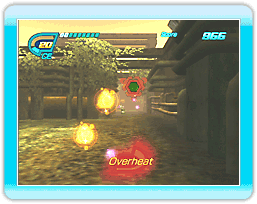

9 |
Comment jouer |
 |
Le but du jeu Eco Shooter: Plant 530 est de terminer chaque niveau avec le meilleur pointage possible. Gagnez des points en tirant sur les ordures alors que votre personnage se déplace sur un chemin prédéfini. Les ordures détruites seront converties en énergie. Aspirez cette énergie pour la convertir en munitions (CE). Si vous vous trouvez sans énergie (CE), la partie est perdue. L’énergie restant dans votre canon à la fin d’un niveau est convertie en points et ajoutée à votre pointage total.
● Énergie (CE)
De manière générale, les ordures qui sont plus difficiles à détruire fournissent plus d’énergie. ● Aspirateur d’énergie L’énergie peut être récupérée en utilisant la fonction aspirateur du canon à recycler. Appuyez sur et maintenez le bouton enfoncé pour démarrer l’aspirateur. Si vous relâchez alors que vous visez de l’énergie, cette dernière sera aspirée dans votre canon à recycler et convertie en munitions. L’aspirateur du canon à recycler peut seulement être activé pendant un temps limité avant de surchauffer. Si vous utilisez l’aspirateur trop longtemps, le mot Overheat (surchauffe) apparaîtra alors à l’écran et l’aspirateur ne pourra être utilisé à nouveau qu’après avoir complètement refroidi. L’aspirateur refroidit à chaque fois qu’il n’est pas utilisé. |
 |
 |